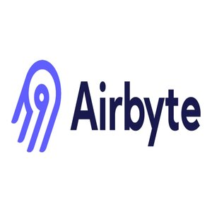
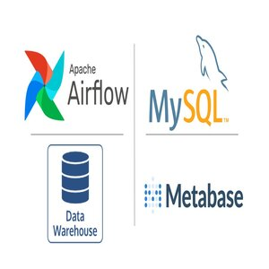
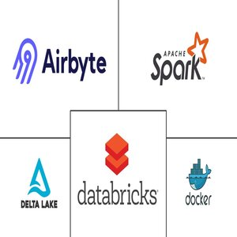
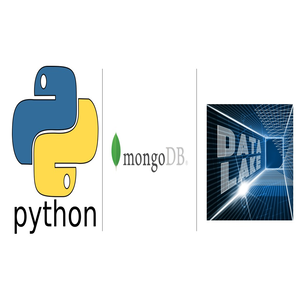
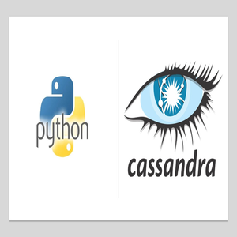

Data Analytics
SQL analysis, KPI definition, operational reporting, exploratory studies, and data quality checks.
- SQL
- KPIs
- Data Quality
Turning complex operational data into trusted insights, scalable pipelines, and business-ready decisions.
Data Analyst and Business Intelligence professional with experience across Databricks, SQL, dashboards, data modeling, operational KPIs, and multidisciplinary product squads.
I am a Data Analyst, Data Engineer, and Business Intelligence professional based in Rio Grande do Sul, Brazil. My purpose is to work in innovative environments, help people, make meaningful contributions, collaborate effectively, and keep growing personally and professionally.
I combine technical data skills with operational experience, business understanding, and a strong focus on quality, clear documentation, reliable delivery, and stakeholder-friendly communication.
Grouped by how recruiters and technical teams evaluate data professionals.
SQL analysis, KPI definition, operational reporting, exploratory studies, and data quality checks.
ETL pipelines, workflow orchestration, data integration, validation notebooks, and scalable processing.
Dashboards and business-ready insights with strong visual clarity and decision support.
Relational, analytical, and NoSQL platforms for extraction, modeling, and reporting.
Automation and data manipulation using code-first workflows and version control practices.
From operations leadership to analytics, data engineering, and BI delivery.
Participate in development squads, conduct data discovery from contractual scopes, document findings in English, create Databricks validation notebooks, apply SQL, optimize data models, and deliver reliable results in SCRUM teams.
Built reports and dashboards, collaborated with Product and Support teams, extracted and processed data from multiple sources, improved data quality, modeled data for analysis, and participated in SCRUM rituals.
Helped structure operations data intelligence, analyzed complex processes, prepared technical reports and presentations, developed dashboards, extracted operational reports, and supported KPI structuring.
Managed operational processes and data using SPC, Ishikawa, Pareto, Lean Manufacturing, One Point Lesson, and 5W2H. Led teams, monitored KPIs, supported Japanese-Portuguese communication, and planned production capacity.
Hands-on projects covering pipelines, warehouses, lakehouses, analytics, and cloud data platforms.





Data Science Academy • 2022 - 2023
Faculdade Metropolitana • Postgraduate Degree
Data Engineer Training
Postgraduate Degree in Data Science and Big Data Analytics
Bachelor's Degree in Production Engineering
Open to data analytics, BI, and data engineering opportunities where clarity, reliability, and business impact matter.